LEX AI
One cloud workspace for a small law practice: the hearing diary, every client file read by AI and kept tamper-proof, and court papers that fill themselves in.
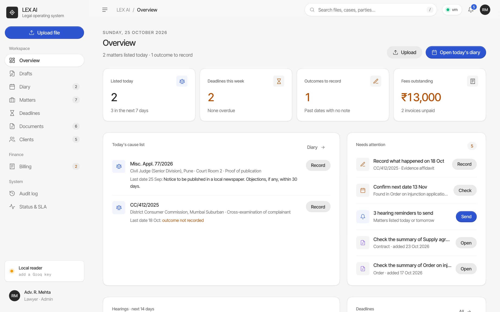
The team
The people who designed, built and tested LEX AI.
Never miss a hearing
Today: dates live in a paper diary, outcomes on scraps of paper, and clients ring to ask what happened.
- Cause list for any day, with what happened at the last date
- Record the outcome and the next date in one form
- The next date goes straight into the diary
- A ready WhatsApp update for the client, in one tap
- Reminders for today and tomorrow; missing outcomes are flagged
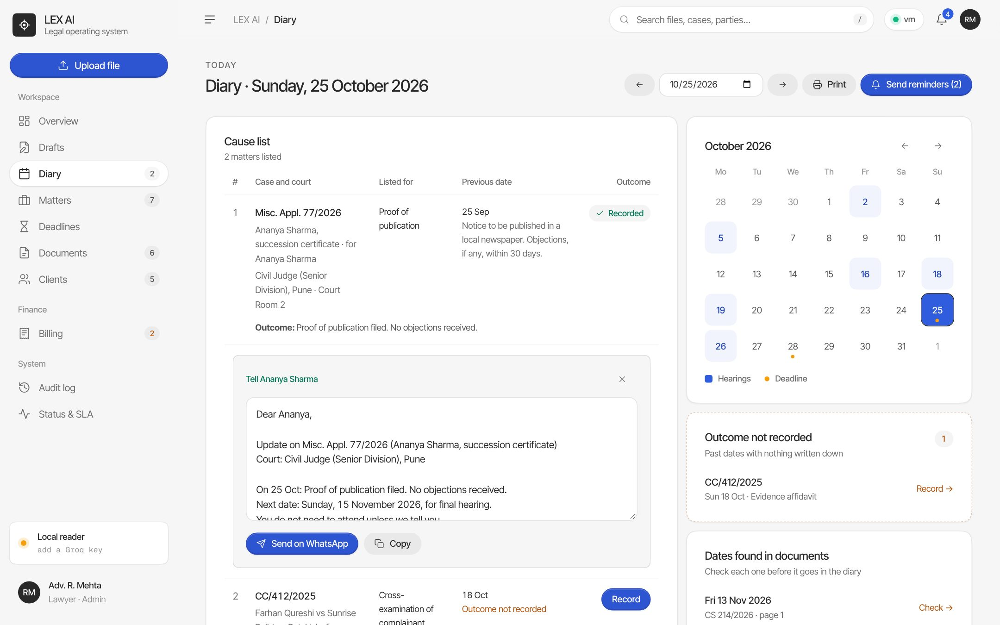
Every case in one place
Today: a case is spread across a file cover, a phone gallery and the clerk's memory.
- One workspace per matter: court, stage, parties and the full hearing history
- Its documents, deadlines, fees and drafts on the same page
- Conflict check while you open a matter: is the other side already your client?
- An audit trail of who did what, and when
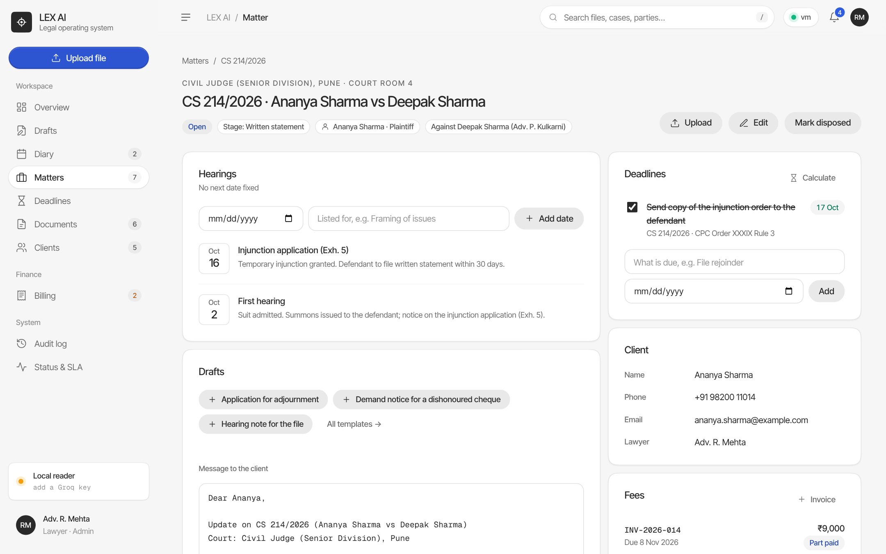
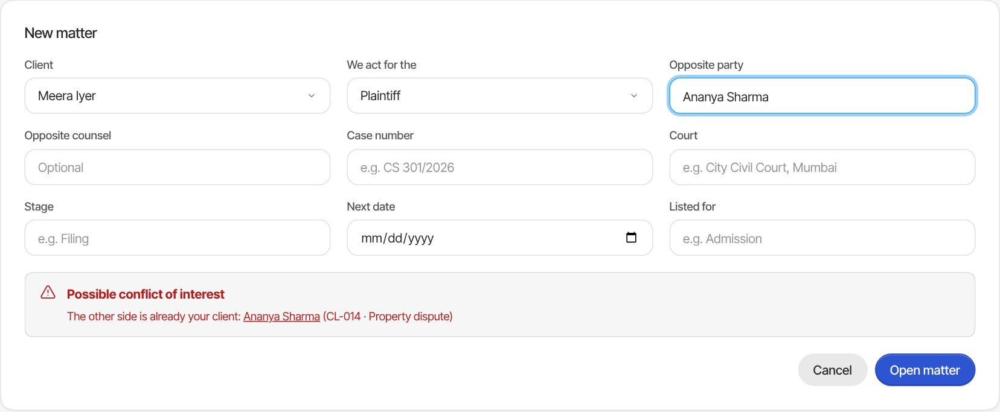
Files read by AI, checked by a lawyer
Today: long orders are read end to end just to find the next date.
- Upload a PDF, a text file or a photo of a page
- A three-sentence summary, the parties and the case number
- The next date with its page, added to the diary only after a lawyer checks it
- Ask the file in plain English; every answer shows its page
- Groq's small, fast Llama model, with a local reader when there is no key
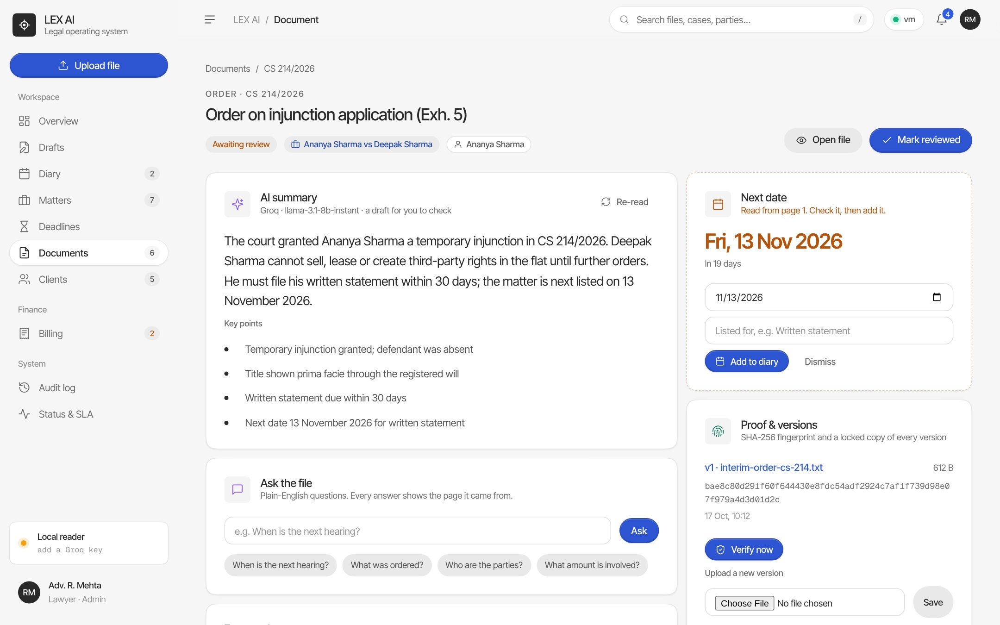
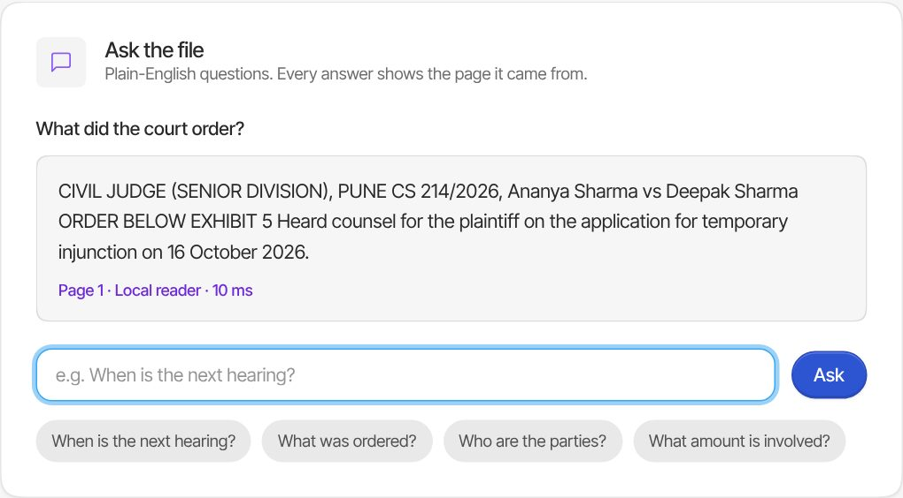
Safe, provable, always on
Today: a lost phone or a crashed PC loses everything, and nobody can prove a file wasn't changed.
- Every version gets a SHA-256 fingerprint and a read-only locked copy
- Tampering is caught on verify and undone from the locked copy
- Docker: nginx in front of two app containers; one fails, the other answers
- Live SLA: P95 latency, error rate and health checks
- Paste a Groq key in the browser; the server never stores it
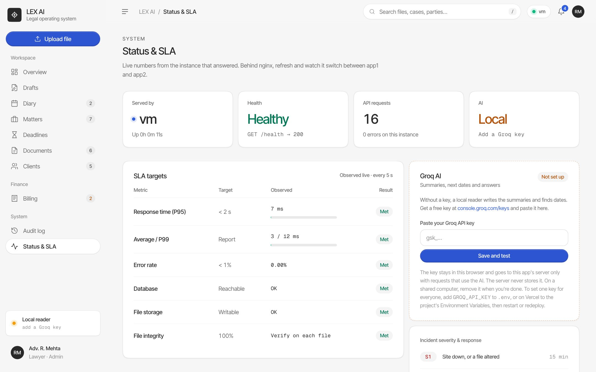
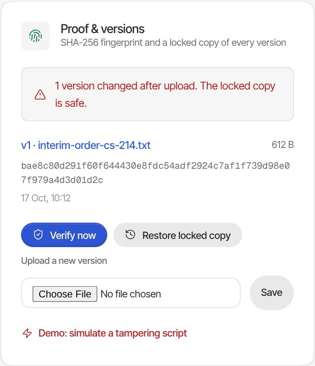
Drafts that fill themselves in
Today: routine papers are retyped from an old file every time, names and all.
- A Google Docs-style editor: A4 page, toolbar, outline, autosave
- Eight templates, including the firm's suit for accounts, Forms 15D and 26D, and eligibility terms
- Court, case number, parties and next date filled from the matter
- What's left is a highlighted blank; fill it once for every copy
- Download for Word or print to PDF
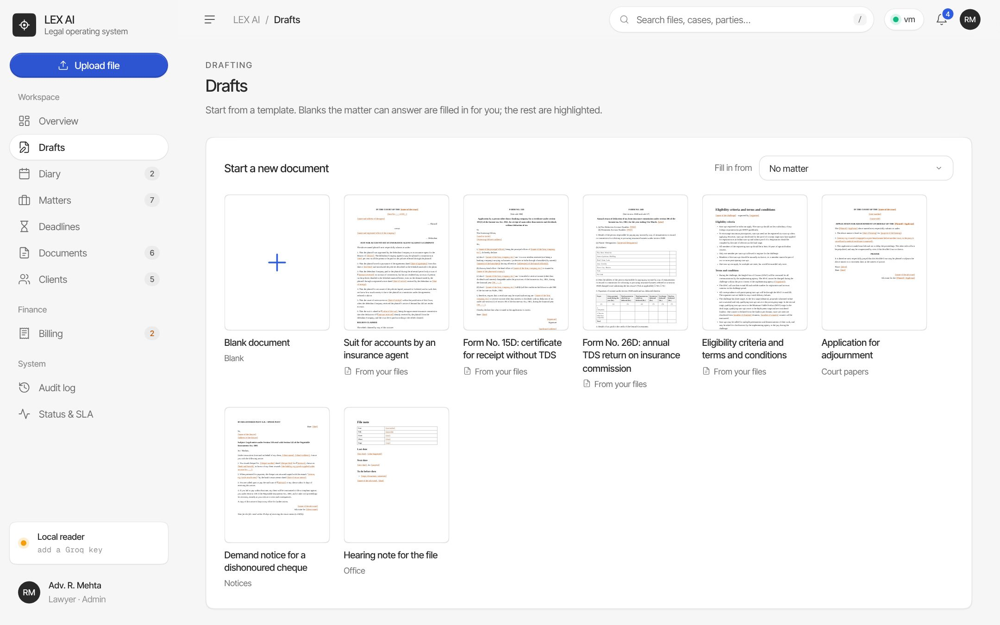
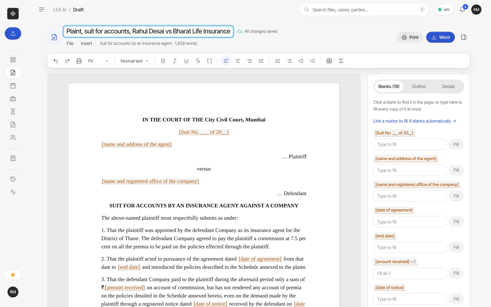
Deadlines, fees, and the court corridor
Limitation periods worked out with the section cited, invoices that track every rupee, and the whole app on a phone.
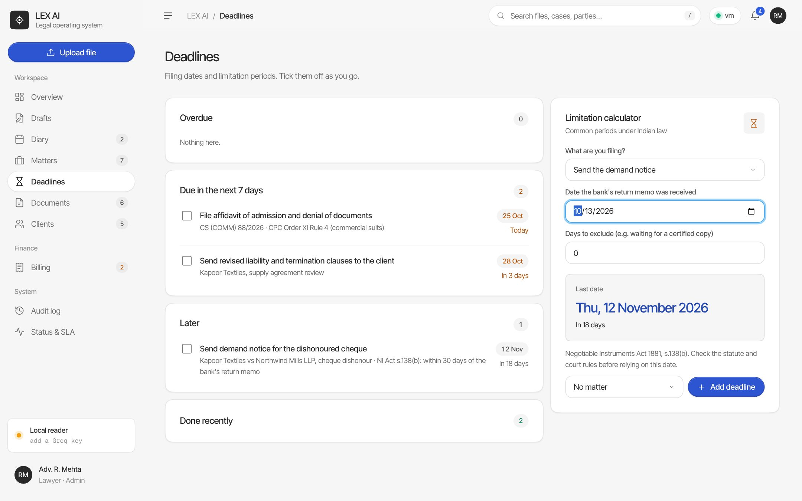
Limitation calculator. CPC, NI Act s.138, Arbitration s.34 and consumer cases, each with its section. Add the result as a deadline.
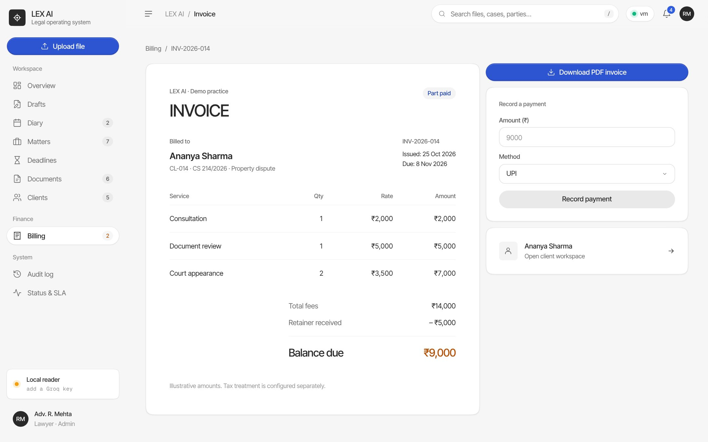
Billing. Itemised invoices, retainers and part payments in ₹, with what's still due and a print-to-PDF invoice.
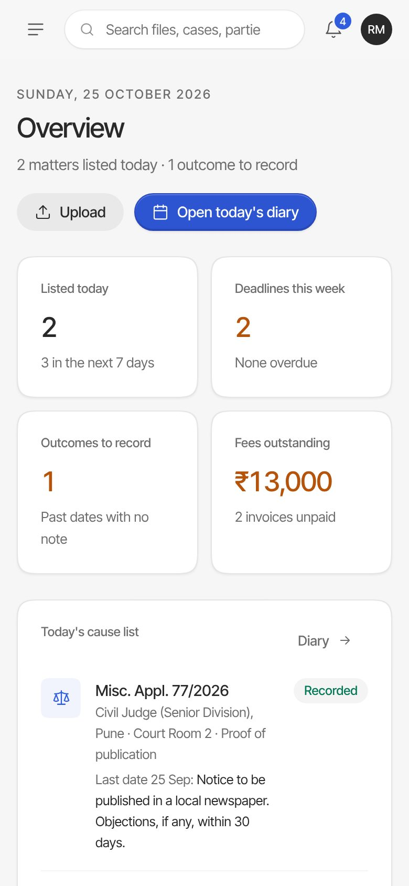
On a phone. The same app, in court.
What makes LEX AI different
Built for a one- to five-lawyer office: the diary, the files and the drafts in one place, at the cost of a small server.
| Paper diary | Cloud drive + word processor | Large practice software | LEX AI | |
|---|---|---|---|---|
| Hearing diary with outcomes and next dates | ||||
| AI summary and next date, with the page | ||||
| Tamper-evident files: fingerprint and locked copy | ||||
| Drafts filled in from the case | ||||
| Indian practice built in: limitation, s.138, ₹, WhatsApp | ||||
| Set up in an afternoon | ||||
| Cost for a small practice | Free | Low | High | Low |
AI that shows its source
Every answer cites its page, and no AI-read date enters the diary until a lawyer checks it.
Proof, not trust
A fingerprint and a locked copy of every version, so a changed file is caught and restored.
Low compute by design
A small AI model, one call per upload, short prompts, and a local reader when there's no key.
Where LEX AI is, and where it goes next
Working today MVP
- Diary, cause list, outcomes and WhatsApp client updates
- Matters with hearing history and a conflict check
- Upload, AI summary, next date with its page, ask the file
- SHA-256 fingerprints, locked copies, tamper detect and restore
- Draft editor with 8 templates filled from the matter
- Limitation calculator, deadlines and billing
- Docker with nginx failover, Vercel deploy, live SLA page
Next Roadmap
- Sign-in with roles for lawyers, juniors and clerks
- Production storage: a managed database and S3 Object Lock
- Import cause lists and next dates from eCourts
- Send updates through the WhatsApp Business API and SMS
- Calendar sync with Google and Outlook
- Hindi and regional languages, with OCR for scanned files
- A client portal for uploads and case updates